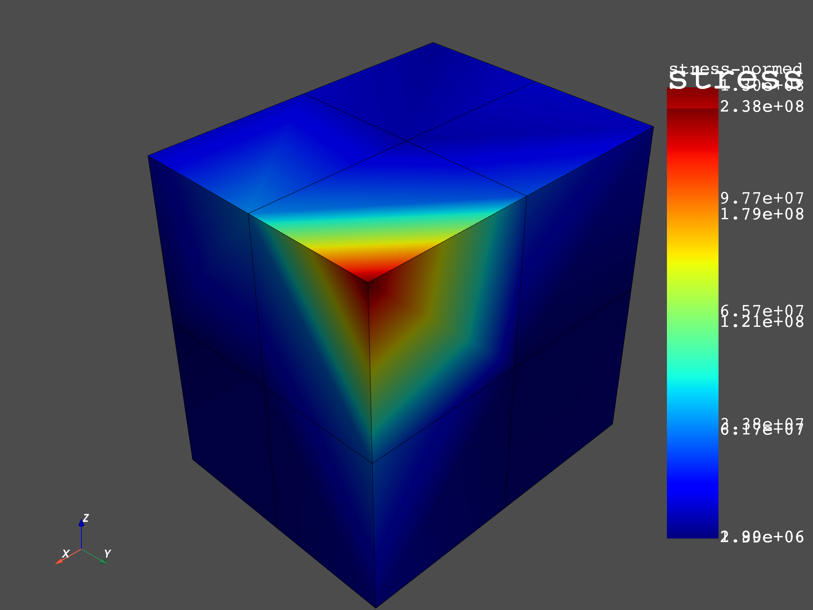
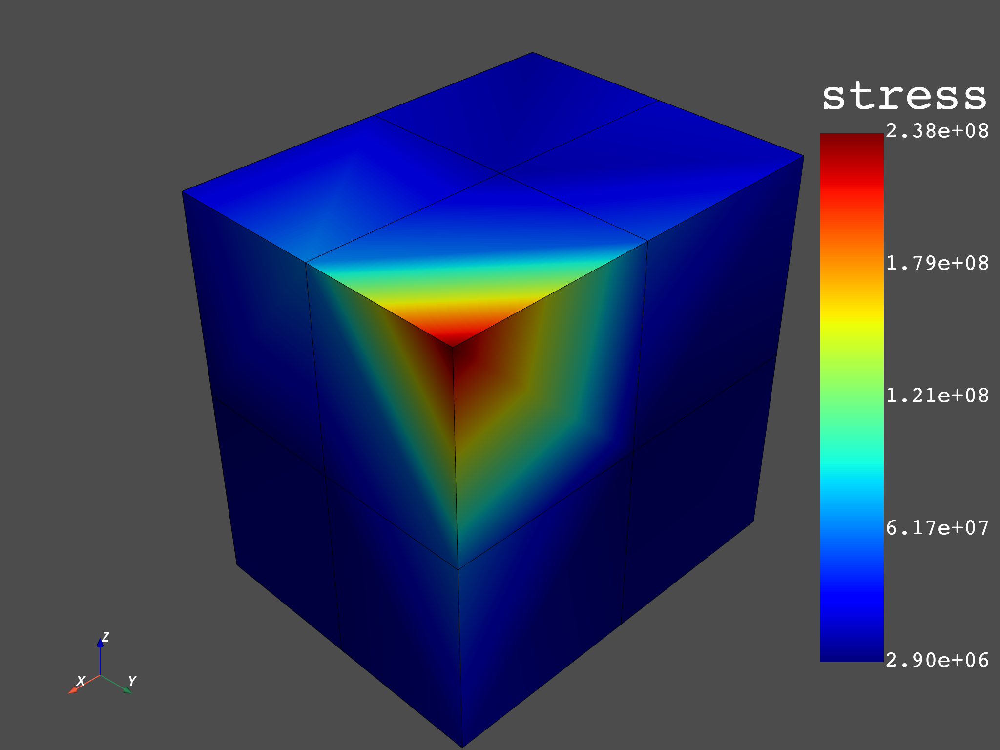

Note
Click here to download the full example code
Extrapolation Method for stress result of 3D-element¶
This example shows how to compute the nodal components stress from Gaussian points (integration points) for 3D-element by using the method of extrapolation.
Extrapolating results available at Gauss or quadrature points to nodal points for a field or fields container. The available elements are:
Linear quadrangle
Parabolic quadrangle
Linear hexagonal
Quadratic hexagonal
Linear tetrahedral
Quadratic tetrahedral
1st step : Get the data source’s solution from the integration points (this
result file was generated with the MAPDL option EREXS, NO).
2nd step: Use operator of extrapolation to compute the nodal stress.
3rd step: Get nodal stress result from data source’s analysis reference. The analysis was computed by Ansys Mechanical APDL.
4th step: Compare the results between nodal stress from data source reference and nodal stress computed by the extrapolation method.
from ansys.dpf import core as dpf
from ansys.dpf.core import examples
Get the data source’s analyse of integration points and data source’s analyse reference
datafile = examples.download_extrapolation_3d_result()
# integration points (Gaussian points)
data_integration_points = datafile["file_integrated"]
data_sources_integration_points = dpf.DataSources(data_integration_points)
# reference
dataSourceref = datafile["file_ref"]
data_sources_ref = dpf.DataSources(dataSourceref)
# get the mesh
model = dpf.Model(data_integration_points)
mesh = model.metadata.meshed_region
# operator instantiation scoping
op_scoping = dpf.operators.scoping.split_on_property_type() # operator instantiation
op_scoping.inputs.mesh.connect(mesh)
op_scoping.inputs.requested_location.connect("Elemental")
mesh_scoping = op_scoping.outputs.mesh_scoping()
Extrapolation from integration points for stress result¶
In this example we compute nodal component stress result from
integration points stress by using the gauss_to_node_fc operator.
# Create stress operator to get stress result of integration points
stressop = dpf.operators.result.stress()
stressop.inputs.data_sources.connect(data_sources_integration_points)
stress = stressop.outputs.fields_container()
Nodal stress result of integration points:¶
The command
ERESX,NOin Mechanical APDL is used to copy directly the gaussian (integration) points results to the nodes, instead of the results at nodes or elements (which are interpolation of results at a few gauss points). The following plot shows the nodal values which are the averaged values of stresses at each node. The value shown at the node is the average of the stresses from the gaussian points of each element that it belongs to.
# plot
stress_nodal_op = dpf.operators.averaging.elemental_nodal_to_nodal_fc()
stress_nodal_op.inputs.fields_container.connect(stress)
mesh.plot(stress_nodal_op.outputs.fields_container())
Create operator gauss_to_node_fc and compute nodal component stress
by applying the extrapolation method.
ex_stress = dpf.operators.averaging.gauss_to_node_fc()
# connect mesh
ex_stress.inputs.mesh.connect(mesh)
# connect fields container stress
ex_stress.inputs.fields_container.connect(stress)
# get output
fex = ex_stress.outputs.fields_container()
Stress result of reference ANSYS Workbench¶
# Stress from file dataSourceref
stressop_ref = dpf.operators.result.stress()
stressop_ref.inputs.data_sources.connect(data_sources_ref)
stressop_ref.inputs.mesh_scoping.connect(mesh_scoping)
stress_ref = stressop_ref.outputs.fields_container()
Plot¶
Showing plots of Extrapolation’s stress result and reference’s stress result
# extrapolation
fex_nodal_op = dpf.operators.averaging.elemental_nodal_to_nodal_fc()
fex_nodal_op.inputs.fields_container.connect(fex)
mesh.plot(fex_nodal_op.outputs.fields_container())
# reference
stress_ref_nodal_op = dpf.operators.averaging.elemental_nodal_to_nodal_fc()
stress_ref_nodal_op.inputs.fields_container.connect(stress_ref)
mesh.plot(stress_ref_nodal_op.outputs.fields_container())
- 
- 
Comparison¶
Compare the stress result computed by extrapolation and reference’s result.
Check if two fields container are identical.
Maximum tolerance gap between to compared values: 1e-2.
Smallest value which will be considered during the comparison
step : all the abs(values) in field less than 1e-8 is considered as null
# operator AreFieldsIdentical_fc
op = dpf.operators.logic.identical_fc()
op.inputs.fields_containerA.connect(fex)
op.inputs.fields_containerB.connect(stress_ref)
op.inputs.tolerance.connect(1.0e-8)
op.inputs.small_value.connect(0.01)
op.outputs.boolean()
Out:
False
Total running time of the script: ( 0 minutes 4.119 seconds)